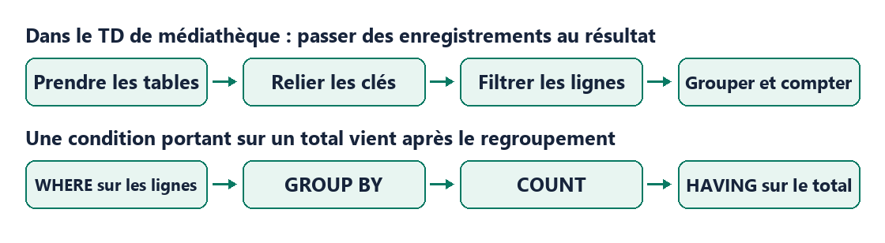
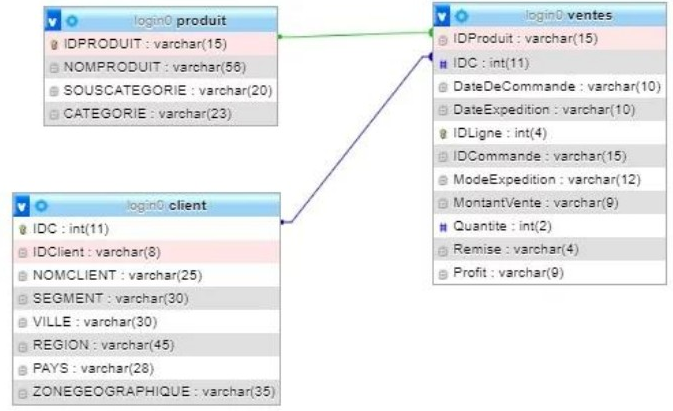

Comprendre le cours
On utilise les tables de la médiathèque pour suivre un prêt, puis pour empêcher un prêt incohérent.
1. Qui exécute la requête ?
- Ton client, par exemple phpMyAdmin ou le programme
mysql, ouvre une session et envoie du SQL. - Le serveur vérifie le compte, les droits, les objets cités et la syntaxe. Son optimiseur décide dans quel ordre lire les tables et quels index utiliser.
- Le moteur de stockage, par exemple InnoDB, lit les pages de données, gère ses caches et coordonne les écritures concurrentes. Le client reçoit des lignes, un message de succès ou une erreur.
Utilise SELECT VERSION(), DATABASE(), CURRENT_USER(); pour savoir sur quel serveur, quelle base et quel compte tu travailles. SHOW PROCESSLIST permet de voir les connexions que ton compte a le droit d’observer. Fermer le client peut interrompre une transaction encore ouverte.
2. Comment les tables se relient-elles ?
| Table | Ce qu’une ligne représente | Identifiant ou lien |
|---|---|---|
| Etudiant | Une personne. | id |
| PC | Une machine. | ref |
| Emprunter | Un prêt avec ses dates. | etd_id et ref pointent vers les deux tables. |
| Maintenance | Une intervention. | maint_id et référence du PC. |
Une clé primaire identifie la ligne avec une valeur unique et non nulle. Une clé étrangère contraint un champ à pointer sur une ligne existante. Même si le code du TD indique #ref, contrôle les contraintes réellement créées avec SHOW CREATE TABLE Emprunter. Les données d’exemple du TP peuvent être importées avec un schéma plus minimal.
CREATE et ALTER changent le schéma. INSERT, UPDATE et DELETE changent son contenu. Un champ numérique, un montant exact (DECIMAL), une date et du texte n’ont pas le même type ni les mêmes comparaisons.
3. Lire une jointure et repérer les lignes perdues

SELECT s.id, s.nom, COUNT(e.ref) AS nb_emprunts
FROM Etudiant AS s
LEFT JOIN Emprunter AS e ON e.etd_id = s.id
AND e.date_emp >= '2024-07-01'
AND e.date_emp < '2024-08-01'
GROUP BY s.id, s.nom;JOIN ne garde que les paires trouvées. LEFT JOIN conserve tous les étudiants et ajoute des valeurs NULL pour ceux qui n’ont pas de prêt correspondant. Les filtres sur la date restent dans ON pour garder ces étudiants. Compter e.ref donne bien 0 pour eux.
WHERE filtre avant le calcul des groupes, HAVING filtre après. COUNT(DISTINCT ref) compte des machines différentes, alors que COUNT(*) compte les lignes sélectionnées. Trie explicitement avec ORDER BY si l’ordre a de l’importance.
4. Donner juste les droits nécessaires
'john'@'localhost' est un compte dont l’origine fait partie du nom. CREATE USER crée le compte, ALTER USER change ses paramètres, GRANT attribue et REVOKE retire. La portée peut être l’ensemble du serveur, une base, une table ou certaines colonnes. WITH GRANT OPTION permet de redonner les privilèges concernés.
Une vue propose une requête nommée pour n’exposer que les champs ou lignes utiles. Une simple vue filtrée peut servir à séparer les données lues, tandis que l’application ou une routine doit relier l’identité du client à ses commandes. Un privilège SELECT sur la table complète permettrait de contourner ce filtrage.
5. Garder une base cohérente et récupérable
- Un index donne un chemin vers les lignes. Teste la même requête avec
EXPLAINet repère l’index effectivement utilisé. Un index composite sur(etd_id,date_emp)peut accompagner une recherche commençant par l’identifiant étudiant. - Une transaction regroupe les modifications.
COMMITvalide,ROLLBACKannule les changements transactionnels non validés. Avec InnoDB, des verrous évitent des écritures contradictoires. Une opération commeALTER TABLEpeut provoquer une validation implicite. - Une sauvegarde se vérifie en restaurant ailleurs. Contrôle le schéma, les lignes, les routines et les déclencheurs. L’export logique d’une base ne reproduit pas à lui seul tous les comptes et droits du serveur.
6. Quand utiliser une fonction, une procédure ou un déclencheur ?
| Outil | Comment il se lance | Exemple du TP |
|---|---|---|
| Fonction | Dans une expression, avec une valeur de retour. | Compter les PC disponibles. |
| Procédure | Sur demande, avec CALL. | Parcourir les emprunts puis ajouter des restrictions. |
| Déclencheur | Automatiquement sur un INSERT, UPDATE ou DELETE. | Refuser un nouvel emprunt pour un PC déjà prêté. |
Dans le client mysql, DELIMITER permet de garder les points-virgules internes d’un bloc BEGIN…END. Une fonction qui interroge les tables peut déclarer READS SQL DATA. Seule une fonction qui produit réellement le même résultat pour les mêmes paramètres doit se dire DETERMINISTIC.
Dérouler un curseur et repérer la fin
Déclare variables, curseur, puis gestionnaire NOT FOUND. Fais OPEN, lis avec FETCH, teste le drapeau de fin puis traite les variables. Termine par CLOSE. Le curseur sert ici à pratiquer le parcours ligne à ligne. Un résultat groupé ou une modification en bloc peut être plus simple à écrire en une requête.
Dans un déclencheur, NEW correspond à la ligne proposée et OLD à l’ancienne quand elle existe. Utilise SIGNAL SQLSTATE '45000' pour remonter une erreur métier. Pour une règle simple d’unicité, UNIQUE protège aussi lors d’écritures simultanées.
Du cours aux TD et TP
Support croisé · Polys DBA, TD1/1 bis/2, TP MySQL 1 à 4 et sujet d’examen pratique disponible.
| Notion du cours | Où la travailler | Ce que tu dois savoir refaire |
|---|---|---|
| Démarrage, comptes et privilèges | DBA partie 1, TD1/1 bis et TP1 | Vérifier la connexion, définir utilisateur et hôte, tester le droit convenu et une action interdite. |
| Tables, clés, index et sauvegarde | DBA partie 1, TD1 | Créer dans l’ordre des références, expliquer l’index qui sert un accès et vérifier une restauration sur une base de test. |
| Jointures et agrégats | TD2 Requêtes et TP2 | Décider LEFT JOIN ou INNER JOIN, vérifier un résultat à zéro et distinguer WHERE et HAVING. |
| Fonctions, procédures, paramètres et curseurs | DBA partie 2, TD2 et TP2–3 | Retourner une valeur depuis une fonction, appeler une procédure, traiter la fin du curseur et vérifier ce qui a été modifié. |
| Déclencheurs et intégrité | DBA partie 2, TD2 Trigger et TP4 | Choisir BEFORE ou AFTER et lire OLD/NEW. Préparer un essai accepté et un essai refusé puis vérifier la table. |
Questions TD & TP
Les exemples utilisent le schéma de la médiathèque. On prend etat_reparation=1 pour « en cours » comme dans les travaux du cours. Pour les exercices qui portent sur un prêt courant, le TP retient une date de retour future. Si tu importes des données historiques, crée des cas de test datés autour d’aujourd’hui.
TD1 · Créer la base et faire évoluer le schéma
Énoncé. Créer entrepot avec client, produit, ventes, ajouter le mail et retirer la remise.


- Crée la base puis sélectionne-la avec
USE entrepot. CréeclientavecIDC INT PRIMARY KEYetproduitavecIDPRODUIT VARCHAR(15) PRIMARY KEY. Reprends les autres colonnes du schéma de l’énoncé. - Crée ensuite
ventes, dont la clé estIDLigne.IDCetIDProduitreprennent les mêmes types que les colonnes référencées, puis reçoivent les deux clés étrangères. - Ajoute une colonne puis retire celle que le sujet abandonne. Avant une suppression sur des données réelles, recense les requêtes qui utilisent la colonne et sauvegarde les données nécessaires.
Afficher les commandes de création
CREATE DATABASE entrepot;
USE entrepot;
CREATE TABLE produit (
IDPRODUIT VARCHAR(15) PRIMARY KEY, NOMPRODUIT VARCHAR(56),
SOUSCATEGORIE VARCHAR(20), CATEGORIE VARCHAR(23)
);
CREATE TABLE client (
IDC INT PRIMARY KEY, IDClient VARCHAR(8), NOMCLIENT VARCHAR(25),
SEGMENT VARCHAR(30), VILLE VARCHAR(30), REGION VARCHAR(45),
PAYS VARCHAR(28), ZONEGEOGRAPHIQUE VARCHAR(35)
);
CREATE TABLE ventes (
IDLigne INT PRIMARY KEY, IDProduit VARCHAR(15) NOT NULL, IDC INT NOT NULL,
DateDeCommande VARCHAR(10), DateExpedition VARCHAR(10), IDCommande VARCHAR(15),
ModeExpedition VARCHAR(12), MontantVente VARCHAR(9), Quantite INT,
Remise VARCHAR(4), Profit VARCHAR(9),
FOREIGN KEY (IDProduit) REFERENCES produit(IDPRODUIT),
FOREIGN KEY (IDC) REFERENCES client(IDC)
);Ce SQL reprend les types du diagramme de départ, y compris les champs de date et de montant stockés en texte. Pour concevoir une base neuve, préfère des types adaptés aux dates et aux montants.
ALTER TABLE client ADD COLUMN email VARCHAR(254);
ALTER TABLE ventes DROP COLUMN Remise;
SHOW CREATE TABLE client;
SHOW CREATE TABLE ventes;TD1 et TP1 · Créer les comptes, tester les droits
Énoncé. Préparer MySQL, puis attribuer à John les droits sur la table et seulement trois colonnes modifiables.
CREATE USER 'john'@'localhost' IDENTIFIED BY '<mot-de-passe-du-labo>';
GRANT SELECT, INSERT, DELETE ON mabase.Matable TO 'john'@'localhost';
GRANT UPDATE (nom, sexe, commentaires) ON mabase.Matable TO 'john'@'localhost';
REVOKE DELETE ON mabase.Matable FROM 'john'@'localhost';
SHOW GRANTS FOR 'john'@'localhost';- Sur le serveur du TP, vérifie le service et connecte-toi comme administrateur de la VM. Dans phpMyAdmin, ouvre l’onglet SQL pour exécuter les requêtes, puis utilise une nouvelle session John pour tester.
- Utilise
ALTER USER … IDENTIFIED BY …pour le mot de passe. Pour Joseph le sujet demandeGRANT SELECT, UPDATE, INSERT, DELETE ON mabase.* … WITH GRANT OPTION. Pour Aline,GRANT ALL PRIVILEGES ON mabase.*reste limité à cette base. Fixe les quotas de la consigne avecALTER USER … WITH MAX_UPDATES_PER_HOUR …, et remets cette valeur à 0 pour lever le quota de mises à jour de John. - Répète le
GRANTsur chacun des périmètres nécessaires pourmabaseetentrepot. Depuis John, vérifie queUPDATEsur une colonne autorisée passe et qu’unDELETEest refusé.
TD1 bis · Construire la matrice des droits du portail
Énoncé. Identifier les profils, leurs actions autorisées et écrire le SQL pour un profil.
- Client : créer des commandes et lire les siennes. Secrétaire : lire et ajouter les clients, les supprimer quand la demande est validée. Commerciaux : gérer les produits. Responsable : modifier ou supprimer les commandes.
- Pour la secrétaire, teste
GRANT SELECT, INSERT, DELETE ON entrepot.client TO 'secretaire'@'localhost'après création du compte. Vérifie qu’aucun privilège plus large, accordé directement ou via un rôle, ne donne accès aux commandes. - Pour le client, contrôle le propriétaire via l’application ou une routine qui relie la session à son identifiant. Accorder
SELECTsur toute la table donnerait aussi les commandes des autres.
TD2 · Écrire les cinq requêtes de la médiathèque
Énoncé. Afficher les étudiants, les PC en réparation, les étudiants restreints et les emprunts de juillet 2024, puis compter ces emprunts par personne.
- Liste les étudiants avec
SELECT * FROM Etudiant. Pour les PC, sélectionnePC pavecEXISTS (SELECT 1 FROM Maintenance m WHERE m.ref=p.ref AND m.etat_reparation=1). Même si plusieurs interventions correspondent,EXISTSne répète pas le PC. - Pour les personnes restreintes, pars d'
Etudiant s, garde les lignes dont l’id apparaît dansEtudiantRestreint, puis sélectionne le nom et le courriel. - Pour le détail de juillet, joins
Etudiant.idàEmprunter.etd_idet filtre les dates sur l’intervalle['2024-07-01', '2024-08-01'[. Affiche nom et ref. Pour les totaux y compris 0, utilise la jointure gauche du cours et vérifie un étudiant sans emprunt et deux homonymes.
TD2 et TP2 · Construire les fonctions de calcul
Énoncé. Retourner le nombre d’emprunts, savoir si un PC est en réparation, compter les disponibilités et obtenir les courriels.
DELIMITER //
CREATE FUNCTION nb_emprunts(p_id INT)
RETURNS INT READS SQL DATA
BEGIN
DECLARE total INT;
SELECT COUNT(*) INTO total
FROM Emprunter WHERE etd_id = p_id;
RETURN total;
END//
DELIMITER ;- Pour
enMaintenance(p_ref), retourneEXISTS (SELECT 1 FROM Maintenance WHERE ref = p_ref AND etat_reparation = 1). Vérifie une référence connue en cours de réparation et une sans intervention active. EmpEnCours(email)joint l’étudiant et ses emprunts puis compte les lignes avecdate_ret > CURDATE().ChargeMaintenance()compte les références distinctes en réparation.NbPcDispo()part dePCet utilise deuxNOT EXISTS, un pour les prêts courants et un pour la maintenance.EmailEnCours()agrège avecGROUP_CONCAT(DISTINCT s.email ORDER BY s.email). Teste un étudiant qui a deux prêts et un autre qui n’en a aucun. Deux prêts ne doivent produire qu’un seul courriel dans la chaîne.
TD2 et TP3 · Procédures, curseur et ancien parc
Énoncé. Détecter les déclarations de durée inférieures d’au moins trois jours et préparer le retrait des machines anciennes.
- Écris une procédure
inserer_etudiant(p_id,p_raison)qui ajoute id,CURDATE()et motif. Pour la liste d’invitation, le curseur lit les courriels des étudiants restreints, et chaque tour ajoute un courriel au résultat. - Pour le contrôle de durée, le curseur lit
etd_id, les deux dates etnb_jours. Si les dates sont renseignées, calculeDATEDIFF(date_ret,date_emp) - nb_jours. À partir de 3, insère une restriction ou ajoute le motif « Une fausse déclaration. » à celle qui existe. Le test 2 → 9 avec 4 jours déclarés déclenche la règle. - Pour la question de préparation, sélectionne les
modele < 2015et exclue tout emprunt actif. Pour les lignes restantes, crée une intervention en cours si elle n’existe pas. Pour la procédure de suppression de ce lot, vérifie d’abord les références dans les tables d’emprunts et de maintenance. La clé étrangère peut imposer l’archivage ou le retrait ordonné des dépendances. - Pour
MajPC, liste d’abord les références concernées parmemoire < 4 OR modele < 2015et calcule le motif. Puis retire ces références dans la base de test en gérant leurs dépendances. Vérifie qu’un modèle 2015 à 4 Go reste présent.
TD2 et TP4 · Refuser une modification ou une réservation
Énoncé. Interdire le changement de courriel, identifier les emprunts invalides et refuser une inscription en double.
DELIMITER //
CREATE TRIGGER interdit_email BEFORE UPDATE ON Etudiant
FOR EACH ROW
BEGIN
IF NOT (NEW.email <=> OLD.email) THEN
SIGNAL SQLSTATE '45000' SET MESSAGE_TEXT = 'Courriel non modifiable';
END IF;
END//
DELIMITER ;- Teste une modification du nom qui doit passer et une modification du courriel qui doit échouer.
<=>compare aussi correctement si une valeur estNULL. - Dans un
BEFORE INSERT ON Emprunter, contrôleNEW.refetNEW.nb_jours. Refuse un PC en réparation ou déjà prêté. Refuse aussi un modèle antérieur à 2012 si la durée dépasse 7 jours, un étudiant restreint au-delà de 3 jours et un PC sous le seuil de mémoire (4 dans les données de l’exercice) au-delà de 4 jours. Répète le contrôle surUPDATEsi les prêts peuvent être modifiés. - Pour le double courriel, utilise un
BEFORE INSERT ON EtudiantavecEXISTSetSIGNAL. Ajoute aussi une contrainteUNIQUEsi tu contrôles le schéma et que les données existantes la respectent. Vérifie les deux insertions, même adresse puis adresse différente.
Sujet pratique A · Transposer les méthodes de la médiathèque à l’hôtel
Énoncé. Avec Client, Chambre, Reservation et ClientBlackliste, retrouver les chambres en travaux, les clients blacklistés et le nombre de réservations par client en 2026. Écrire aussi une fonction de comptage, une procédure de mise en liste noire et une procédure à curseur qui retire du catalogue les chambres Standard sous 50 €.
- Le filtre sur l’état se fait dans
WHERE etat = 'Travaux'. Pour les contacts blacklistés, relie les tables surid_clientou utilise unEXISTScorrélé. Celui-ci renvoie chaque client une seule fois. - Pour compter aussi les clients à zéro, pars de Client et mets le filtre de dates dans la jointure. Compte la clé de Reservation, jamais la ligne produite par le
LEFT JOIN.
SELECT c.nom, COUNT(r.id_res) AS total
FROM Client AS c
LEFT JOIN Reservation AS r
ON r.id_client = c.id_client
AND r.date_arrivee >= '2026-01-01'
AND r.date_arrivee < '2027-01-01'
GROUP BY c.id_client, c.nom;- Dans la fonction, filtre sur le paramètre
c_idet retourneCOUNT(*). Dansblacklister_client, utilise la liste de colonnes(id_client, date_incident, motif)et les valeurs(id_c, CURDATE(), raison). Contrôle le résultat avec une consultation par identifiant. - Pour
RenovationChambres, déclare un curseur sur les numéros des chambresStandarddontprix_nuit < 50.00, puis un gestionnaireNOT FOUND. Après chaque lecture réussie, affiche le message pour ce numéro et supprime parnum_chambre. Teste sur une copie et contrôle les clés étrangères. Une réservation existante peut interdire la suppression. Traite ce cas sans supprimer les réservations pour contourner la contrainte. - Pour vérifier, prends une chambre à 49 €, une à 50 € et une chambre non standard. Seule la première répond au filtre. Le sujet demande une capture de la commande exécutée et de son résultat.